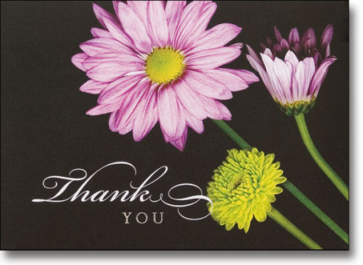

ThankYou To My Family, I cannot thank you all enough for making this Christmas a wonderful memory. Not only in the gifts given to me which were so SPECIAL but for all the effort everyone of you put into making our Kris Kringle Day an event to remember. It is a day that I know I look forward to each year. Tricia and Chris Again and as always you go way above and beyond as host and hostess. You both make it such a pleasure for everyone. The hero along with all the other foods you supplied were delicious! Thank you for doing this years Kris Kringle Day. Jeanne and Bill As always you do the best antipasto and tomato and mozzarella salad. Dan and Nan Your salad with the walnuts and the veggies and dip were yummy! Barbara and Tom Those cream cheese/chocolate chips cookies were way too good! I sh...

thankyou